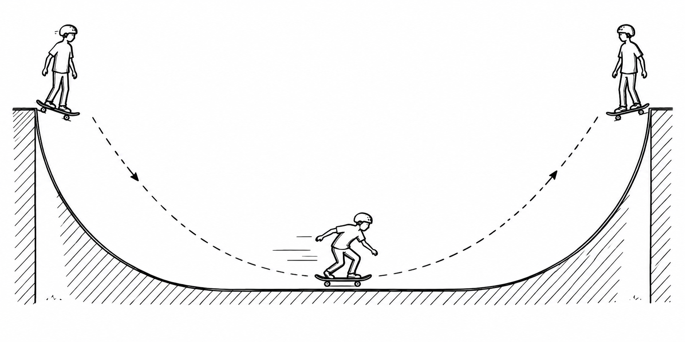
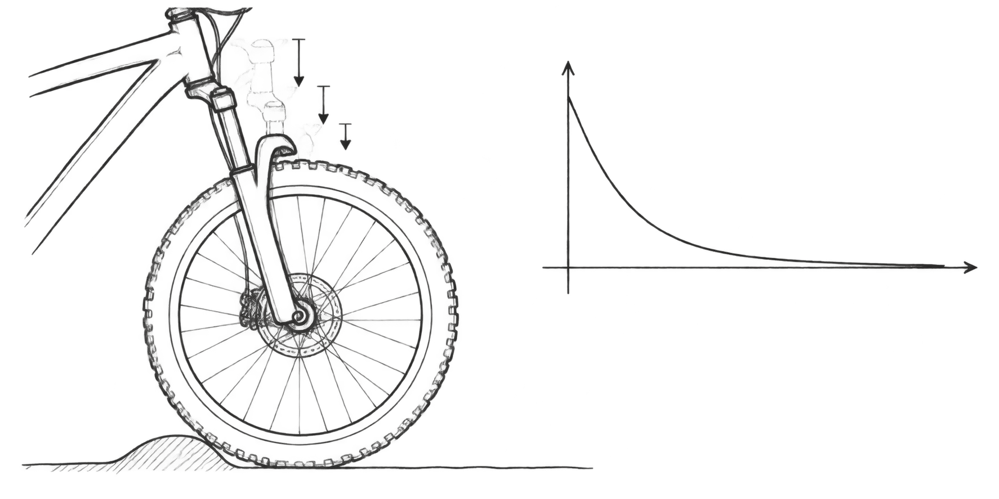

Federpendel · Selbstlerneinheit
Wo bleibt die Energie?
Ein Skateboarder in der Halfpipe hilft dir, den ständigen Wechsel der Energie beim Federpendel zu verstehen.
Dein Lernweg
Arbeite die sechs Stationen der Reihe nach durch. Vermute zuerst. Öffne danach die Erklärung. In den interaktiven Modellen kannst du die Bewegung selbst steuern.
Ein Skateboarder in der Halfpipe

Oben ist der Skateboarder kurz fast in Ruhe. Seine Lageenergie ist groß. Beim Herunterfahren wird Lageenergie in Bewegungsenergie umgewandelt.
Unten ist er am schnellsten. Dort ist seine Bewegungsenergie am größten. Beim Hochfahren wird sie wieder zu Lageenergie.
Ohne Reibung erreicht er auf der anderen Seite wieder dieselbe Höhe. Die Energie verschwindet nicht. Sie wechselt nur ihre Form.
Das Federpendel macht etwas Ähnliches
Beim Federpendel übernimmt die potenzielle Energie der Schwingung die Rolle der Lageenergie in der Halfpipe. Wir messen die Auslenkung \(x\) von der Ruhelage aus.
Bei einem senkrechten Federpendel wirken Feder und Gewichtskraft zusammen. Misst man \(x\) von der Ruhelage aus, beschreibt die Formel oben die Änderung der gesamten potenziellen Energie gegenüber der Ruhelage.
Bewege den Regler durch eine ganze Schwingung. Beobachte Ort, Geschwindigkeit und Energie.
Die Summe bleibt gleich:
Am Umkehrpunkt gilt \(v=0\). Dort ist nur potenzielle Energie der Schwingung vorhanden. In der Ruhelage gilt \(x=0\). Dort ist die Bewegungsenergie am größten.
Beide Energien sind nie negativ. Das liegt an \(x^2\) und \(v^2\).
Reibung bremst die Bewegung
Eine echte Halfpipe und ein echtes Federpendel haben Reibung. Rollen, Lager und Luft werden warm. Dabei wird mechanische Energie an die Umgebung übertragen.
Nein. Die mechanische Energie des Pendels wird kleiner. Sie wird vor allem in innere Energie der Umgebung umgewandelt. Umgangssprachlich sagen wir: Es entsteht Wärme.
Darum wird die Amplitude immer kleiner. Ohne neue Energie kommt das Pendel schließlich zur Ruhe.
Mit den Beinen neue Energie zuführen
Ein Skateboarder kann sich in der Halfpipe passend zur Bewegung strecken und beugen. So führt er regelmäßig Energie zu. Beim Federpendel kann eine äußere Kraft dasselbe tun.
Die äußere Kraft muss im passenden Takt Energie zuführen. Liegt ihr Takt nahe an der Eigenfrequenz, kann die Amplitude stark wachsen. Das nennt man Resonanz.
Reibung begrenzt das Wachstum. Nach einiger Zeit kann pro Schwingung genauso viel Energie zugeführt werden, wie durch Reibung abgegeben wird.
Schnell zur Ruhe: die Federgabel

Was bedeutet „aperiodischer Grenzfall“?
Das System kehrt besonders schnell in die Ruhelage zurück, ohne über sie hinauszuschwingen. „Aperiodisch“ bedeutet: Es gibt keine wiederholte Schwingung mehr.
Bei einer Federgabel ist das nützlich. Das Rad soll nach einem Stoß nicht lange hüpfen. Eine zu starke Dämpfung wäre aber ebenfalls ungünstig: Dann kehrt die Gabel nur langsam zurück.
Für Experten: alles in einer Gleichung
In der letzten Selbstlerneinheit stand für das ideale Federpendel:
Jetzt kommen zwei neue Einflüsse hinzu. Die Dämpfungskraft wird vereinfacht als proportional zur Geschwindigkeit beschrieben. Die äußere Kraft wirkt periodisch.
\(m\,\ddot{x}\)Trägheit der Masse
\(b\,\dot{x}\)Dämpfung durch Reibung
\(D\,x\)Rücktreibende Federkraft
\(F_0\sin(\Omega t)\)periodische Anregung von außen
Setzt man \(b=0\) und \(F_0=0\), erhält man wieder die Gleichung aus der letzten Einheit. Die neue Gleichung fasst also das ideale Pendel, die Reibung und die Anregung zusammen.
Zusatz: Wo steckt der aperiodische Grenzfall?
Ohne äußere Anregung gilt \(F_0=0\). Der aperiodische Grenzfall liegt bei
Diese Formel ist ein Ausblick. Wichtig ist zunächst die Bedeutung: schnellste Rückkehr zur Ruhelage ohne Überschwingen.
Das Wichtigste
Beim idealen Federpendel wechseln sich Spannenergie und Bewegungsenergie ab. Reibung überträgt mechanische Energie an die Umgebung; die Amplitude sinkt. Eine periodische äußere Kraft kann neue Energie zuführen. Nahe der Eigenfrequenz kann Resonanz entstehen. Starke Dämpfung kann Schwingungen verhindern; im aperiodischen Grenzfall kehrt das System besonders schnell und ohne Überschwingen zurück.
Das Zeitgesetz noch einmal ansehen →